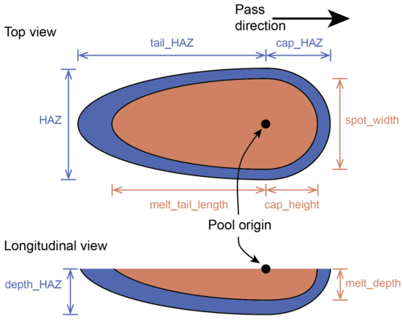

Syntax:
app_style potts/additive nspins spot_width melt_tail_length melt_depth cap_height HAZ tail_HAZ depth_HAZ cap_HAZ exp_factor
Examples:
app_style potts/additive 1000 30 40 20 5 50 60 30 7 0.1
Description:
This is an on-lattice application derived from the app_style potts/neighonly application that simulates the rastering of a molten pool and its accompanying heat-affected zone (HAZ) through a domain. Rastering is achieved through the specification of layer-by-layer patterns, which can be combined into an overall pattern specifying the translation of the molten zone through the entire simulation domain. The application allows for arbitrary numbers of paths in each layer and an arbitrary number of layers in each pattern. Thus, the user can construct any scan strategy desired by specifying individual layer patterns and how these patterns should be repeated.
The molten pool is defined as a double ellipsoid. The ellipsoids share identical values for two of their axes (defined by the melt_width and melt_depth parameters). The third axis of each ellipsoid is defined by either the melt_tail_length or cap_height parameters. The haz is also defined by four equivalent parameters: HAZ, tail_HAZ, depth_HAZ, and cap_HAZ. A schematic of these eight parameters is shown below.
The model also requires specification of the exp_factor variable, which determines the value of the coefficient in the mobility equation, M = exp(-exp_factor * x), where x is the shortest distance from the lattice site to the molten pool boundary.
This application was used in the paper by Rodgers and collaborators.
The following additional commands are defined by this application, and in fact must be specified to setup a simulation.
| am_pass | Define the parameters for each type of single-track pass. |
| am_transverse_pass | Define the parameters for the transverse increment (a.k.a. hatch spacing) between each pass. |
| am_cartesian_layer | Define the combination of passes and transverse_passes that comprise a layer. Limited to passes aligned along the +/-X or Y axes. |
| am_pattern | Define the combination of layers that comprise a pattern. |
The examples/potts_additive directory has input files which illustrate how to use these additional commands.
This application is only compatible with square and square cubic lattices.
This application can only be evolved by a rejection KMC (rKMC) algorithm. See the sweep command for more details.
The settings for melt pool width + haz must be <= xhi & yhi.
Related commands:
app_style potts/weld, app_style potts/weld/jom
Default: none
(Rodgers) T.M. Rodgers, J.D. Madison and V. Tikare, "Simulation of Metal Additive Manufacturing Microstructures Using Kinetic Monte Carlo", Computational Materials Science (2017).